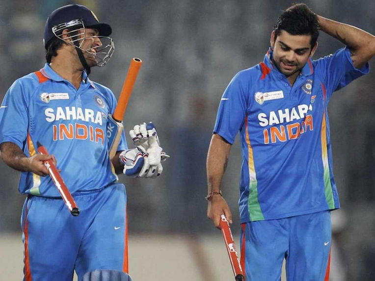

 Mahendra Singh Dhoni was born on July 7, 1981 at Ranchi, Jharkhand located in the east corner of India. He studied at DAV Jawahar Vidya Mandir where he was keenly interested in football and badminton. He was made the captain of the ODI team in 2007 and the Test team in 2008. In 2009, he scored 1198 runs in 24 innings at an average of 70.43 to be the highest scorer of the year in ODI’s. He has been part of the ICC World ODI XI for 6 years in a row from 2008-2013. He has been awarded the Rajiv Gandhi Khel Ratna which is the highest sports honor given by the government of India in the year 2008. He advertises more than 15 products as of 2013 and is one of the most marketable players in the world. In June 2013, he was reported to be the 16th highest paid sportsman in the world with yearly earnings of $31 million. He is one of the most successful Indian sportsmen that the world has ever seen. He was made the captain of the Indian Cricket team for ICC T20 World Cup in 2007. He came back from South Africa with the trophy. He was then made the permanent Captain of the Indian Cricket team for ODIs too. The very next year, he became the captain of the Test team too when he, as the then vice-captain had to take the reins against a test against Australia because Anil Kumble, who was the skipper then, was injured. Kumble declared his retirement after that series and Dhoni became the full-time test captain for India as well. It was with Him at the helm that Team India reached No 1 in the ICC Test Ratings.
Home